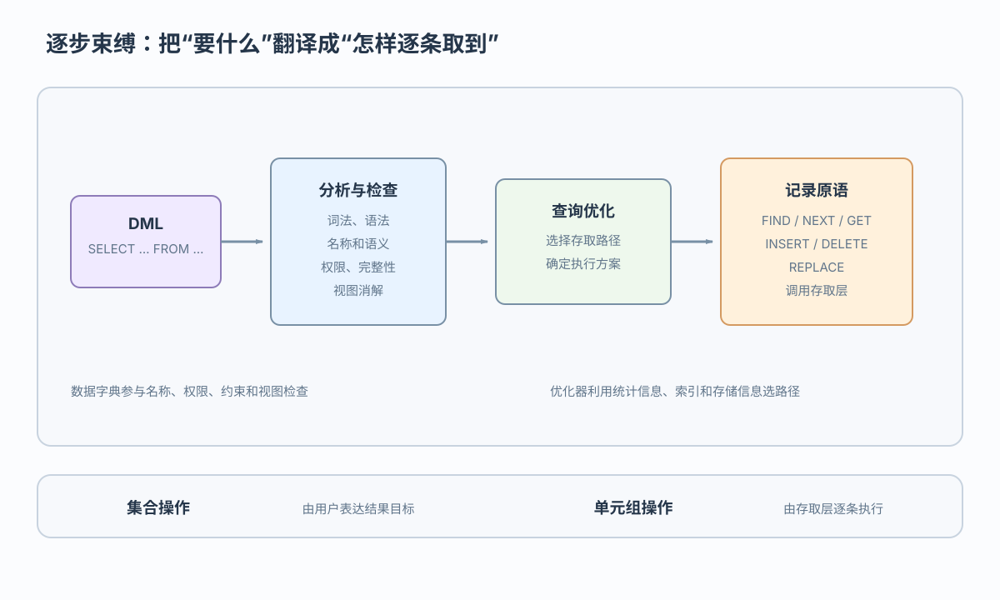

DDL
CREATE TABLE、CREATE VIEW：形成内部表示并登记数据字典
视图查询怎样变成 FIND → GET → NEXT，更新索引键后谁同步改索引
 VER. 2608
Built with impress.js
VER. 2608
Built with impress.js
HonorStudent：改成基本表、元组调用；更新：数据、锁、日志、索引变化
三类语句都先解析，但之后分别修改系统目录、读取更新记录或改变授权信息

CREATE TABLE、CREATE VIEW：形成内部表示并登记数据字典
SELECT、INSERT、UPDATE、DELETE：检查、消解、优化并逐步束缚
GRANT、REVOKE：登记权限定义，并参与执行时授权判断
三类语言都在语言处理层汇合，但 DDL、DML 和 DCL 的处理重点不同
案例：SELECT Sno, Grade FROM HonorStudent WHERE Sno = '20180003'

FIND、NEXT、GET 等元组调用静态检查和执行时检查共同维护正确性；视图消解还要先读取视图定义
| 检查环节 | 依据 | 处理时机 | 典型问题 |
|---|---|---|---|
| 词法／语法 | SQL 语言规则 | 分析阶段 | 语句结构错误 |
| 名称与语义 | 关系、属性和类型定义 | 处理阶段 | 对象不存在或类型不符 |
| 权限 | 用户与权限定义 | 处理阶段，必要时运行时 | 无权读取或更新 |
| 完整性 | 约束和当前数据状态 | 静态检查与执行时检查 | 主码、参照或动态规则冲突 |
| 视图消解 | 视图定义 | 绑定前转换 | 把视图操作转换为基本表操作 |
向上提供记录／元组接口，向下依赖系统缓冲区的页面和存储器接口
向上提供一次一个元组的导航式接口，逻辑存取路径可以是文件或索引；向下依赖缓冲区接口，不直接暴露物理块
记录原语面向单个元组和逻辑存取路径；事务原语负责边界，不暴露物理块
FIND、FIRST、NEXT、PRIOR、LAST
GET、INSERT、DELETE、REPLACE
BEGIN TRANSACTION、COMMIT、ROLLBACK
FIND→GET→NEXT ｜ 事务：BEGIN TRANSACTION→COMMIT／ROLLBACK前两组负责记录访问，事务原语负责事务边界；逐步束缚把集合语句转换为有顺序的调用序列，结果取决于语义和存取路径
记录改元组，封锁管并发，路径改索引，日志保存 UNDO／REDO 的旧值新值
| 子系统 | 核心职责 | 协作对象 |
|---|---|---|
| 记录存取与事务管理 | 元组查找、更新和事务边界 | 缓冲区、日志 |
| 日志登记 | 写入日志并支持 UNDO／REDO | 事务管理、恢复 |
| 控制信息管理 | 读取数据字典和控制信息 | 语言处理层 |
| 排序／合并 | 有序输出、连接预处理和索引建立 | 记录与路径 |
| 存取路径维护 | 更新数据时保持索引一致 | 数据更新 |
| 封锁子系统 | 并发控制和锁表管理 | 事务管理 |
更新带索引的记录时，记录存取与事务管理、封锁、路径维护和日志登记共同协作
更新元组时若遗漏相关索引维护，会产生错误存取路径
修改索引键时必须同步更新索引项；修改非索引属性时索引项可能不变。路径维护保证数据可访问，日志支持恢复，封锁支持并发，排序／合并支持有序输出和中间运算
查询时消解视图并绑定记录原语；更新时同步表和索引，同时加锁并写日志
将外部名转成内部名；用字典检查语义和权限；把 HonorStudent 消解为基本表操作
按统计和路径选方案，再绑定 FIND → GET → NEXT；束缚不是再次优化
存取模块改元组；事务模块定提交回滚；封锁模块让冲突者等待；日志保存旧值新值；缓冲区承接页面
更新索引键时同步表与索引；用日志和封锁保持一致
FIND、GET、NEXT 如何把集合请求变成记录访问？ORDER BY 或连接何时需要排序／合并？